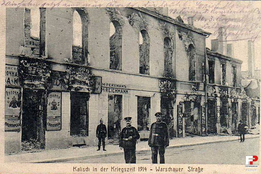
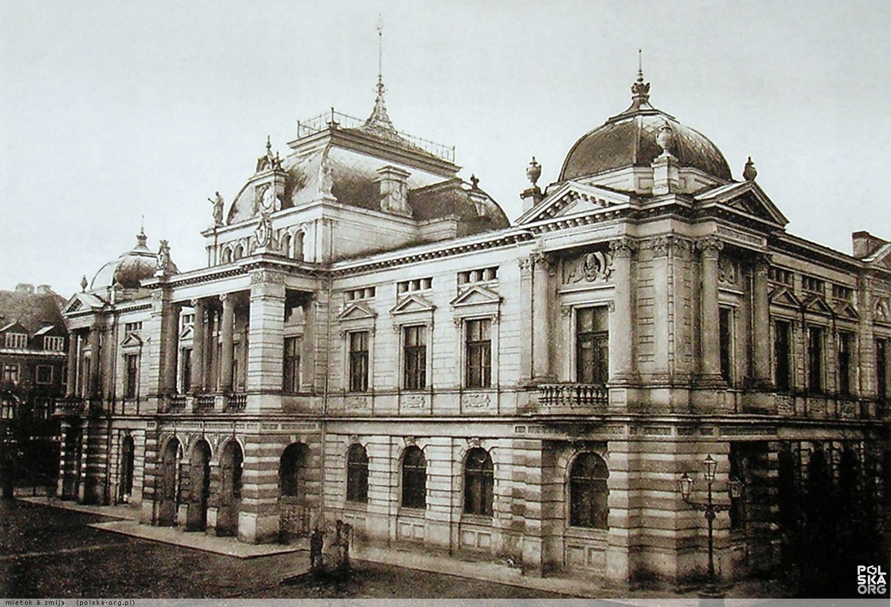

 Kalisz to drugie pod względem wielkości miasto Wielkopolski, leży w malowniczej dolinie rzeki Prosny. Najstarsze ślady działalności ludzkiej na terenie miasta i jego okolic sięgają mezolitu. Intensywne zasiedlenie w okresie wpływów rzymskich wynikało z położenia w znaczącym punkcie "Szlaku Bursztynowego", łączącego imperium rzymskie z wybrzeżem Bałtyku. O randze tegoż centrum osadniczego świadczy fakt, iż około połowy II wieku n.e. aleksandryjski uczony Klaudiusz Ptolemeusz w "Geografii" wymienił miejscowość "Kalisia", identyfikowaną przez badaczy z Kaliszem. Zapis ten sprawił, że Kalisz szczyci się posiadaniem najstarszej metryki pisanej wśród miast polskich.
Wczesnośredniowieczny gród na Zawodziu (IX/X-XIII w.) należał do największych piastowskich ośrodków grodowo-miejskich. Po 1233 r. książę śląski Henryk Brodaty przeniósł centrum osadnicze Kalisza na północ od Zawodzia, na nowe miejsce.
Około 1257 r. książę Bolesław Pobożny ulokował Kalisz na prawie średzkim. Wewnętrzną przestrzeń miasta cechował wrzecionowaty układ 2 ulic handlowych, przeciętych systemem przecznic, z centralnie usytuowanym prostokątnym rynkiem. Ten średniowieczny układ urbanistyczny przetrwał do dziś.
W mieście lokacyjnym wyodrębniona była dzielnica żydowska. W XIII wieku społeczność żydowska zorganizowana była w gminę, jedną z najstarszych na ziemiach polskich. O jej znaczeniu świadczy tzw. Statut Kaliski nadany miejscowym Żydom przez Bolesława Pobożnego w 1264 r. Regulował on położenie prawne tej grupy mieszkańców.
Rozkwit miasta przypadł na XV i XVI w. Niebagatelny wpływ na architektoniczne i intelektualne oblicze miasta miało sprowadzenie doń jezuitów (1583 r.) oraz fundacja kolegium i kościoła dokonana przez arcybiskupa gnieźnieńskiego Stanisława Karnkowskiego.
Liczne wojny i pożary w XVII i XVIII w. zahamowały rozwój Kalisza. Tragiczny był zwłaszcza rok 1792, kiedy to wielki pożar strawił bez mała całe miasto.
W okresie rządów pruskich (1793-1806) rozebrano większość murów miejskich, a poza ich obrębem wytyczono w 1800 roku reprezentacyjną Aleję Luizy (obecnie Aleja Wolności). Założony został park miejski (1798 r.). W 1801 roku stanął pierwszy drewniany teatr Wojciecha Bogusławskiego.
Po upadku Księstwa Warszawskiego w 1815 r. Kalisz znalazł się w granicach Królestwa Polskiego. Jako jedno z większych miast kongresówki stanowił ważny ośrodek administracyjny, gospodarczy i kulturalny. W połowie XIX w. powstały tu monumentalne budowle klasycystyczne: Szkoła Wojewódzka (1819 r.), Gmach Trybunału (1820-1824), Pałac Gubernatorski (1824-25), Most Kamienny (1825 r.). Znaczące też były osiągnięcia miasta jako ośrodka intelektualnego. Z Kaliszem związani byli m.in. A.Asnyk, M.Konopnicka, W.Bogusławski, St.Szolc-Rogoziński, M.Dąbrowska.
I Wojna Światowa odcisnęła na Kaliszu swe tragiczne piętno. W sierpniu 1914 r. wojska pruskie zburzyły i spaliły bezbronne miasto. 95% staromiejskiej zabudowy legło w gruzach. Prowadzona w latach 20-tych i 30-tych odbudowa była pierwszym takim przedsięwzięciem w skali kraju. Staromiejskie centrum odbudowano zgodnie z wytycznymi konserwatorskimi, zachowując układ przestrzenny, choć bez rekonstrukcji form historycznych budynków.
Podczas II Wojny Światowej Kalisz wcielony został do tzw. Kraju Warty. Okupacja przyniosła represje i prześladowania.
Lata powojenne zaznaczyły się rozbudową przemysłu, infrastruktury miejskiej oraz rozwojem społeczno-kulturalnym.
W 1992 r. utworzona została diecezja kaliska. Niewątpliwie jednym z najważniejszych wydarzeń w dziejach miasta była wizyta Papieża Jana Pawła II (4 czerwca 1997 r.) podczas V pielgrzymki do ojczyzny.